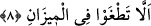

müfessirler de şöyle açıklar; Allah onu aşağıdan yukarıya kullarının bir çok faydaları ve
iyilikleri için yükseltip koruyucu tavan gibi yaptı ve yer ile arasındaki uzaklığı
beşyüzyıl kıldı. Zira gökyüzü duman görünümündedir, yer küresindeki suların dalgaları
onunla kaynayıp hareket kazanmıştır.
“Ve mîzanı (dengeyi) o koydu.” Yâni, Allah dünyada işler düzene girsin ve âdil bir
denge kurulabilsin diye adâletli hukuk sistemi koydu ve her hak edenin hakkını alabilsin
diye de adâletli olmayı emretti. Nitekim Peygamberimiz (s.a.): “Gökler ve yeryüzü
adâletle dengede durur” buyurmuştur. Bu dengenin başında Kur’an vardır, denilmiştir.
Ayrıca ölçü, tartı gibi eşyanın miktarını belirleyen şeyleri yarattı, denilmiştir.
Bu durumda mânâ şöyle olur: Allah yeryüzündeki her şeyi belli bir düzende yarattı ve
her şeyin ölçüsünü ortaya koydu. Kullarının aralarında icra ettikleri hükümleri ve
uygulamaları, alış verişlerindeki ölçü ve düzenlemeleri bu dengeye bağladı.
Sa’dî Müftî demiştir ki; bundan sonra gelen, “Sakın dengeyi bozmayın. Ölçüyü
adâletle tutun ve eksik tartmayın (er-Rahmân 55/8-9) âyet-i kerîmelerinin mânâsı bu
mânâyı çok güzel toplayıp özetlemektedir. Bu sebeple Zemahşerî bu mânâyı kayd
etmekle yetinmiştir.
Kâşifî şöyle demiştir: “Mizânı koydu” demek, “teraziyi yaratması veya göndermesi ya
da onun îcâd edilmesi konusunda halka ilham vermesi” demektir. Böylece âdil ve insaflı
uygulamaya ulaşılmış olur. Bu ölçü ve tartı uygulaması Nuh (a.s.) zamanında olmuştu.
Zira, ondan önce ölçü, tartı yoktu.
Katade demiştir ki: Bu âyet-i kerîme’de şöyle buyrulmuş oluyor: Ey insanoğlu, sana
yapılmasını istediğin gibi adâletli ol, sana yapılmasından hoşlandığın muâmeleyi sen de
başkasına yap. Çünkü adâlet insanlığın salâhına sebeptir.
8. Sakın dengeyi bozmayın.
Allah adâleti çiğneyip haddi aşmayasınız diye bu ölçüyü koydu. Alışveriş yaparken
ölçüde haddi aşmayınız yâni adâletten ayrılmayınız ve doğru iş yapınız.
Kendi terâzin eğri ve hileli olduğu halde
Mükafât terâzisinin doğru olmasını nasıl beklersin?
İbnu’ş-Şeyh demiştir ki: Âyet-i kerîmede geçen “tuğyan,” “taşkınlık yapmak ve haddi
aşmaktır.” Yine âyet-i kerîmede “mizan,” “adâlettir,” diyene göre tuğyan, haddi
aşmaktır, zulümdür. Ölçü ve denge, doğruluk, dürüstlük aracı ise, eksik tartmak da
haddi aşmaktır, dengeyi bozmaktır.